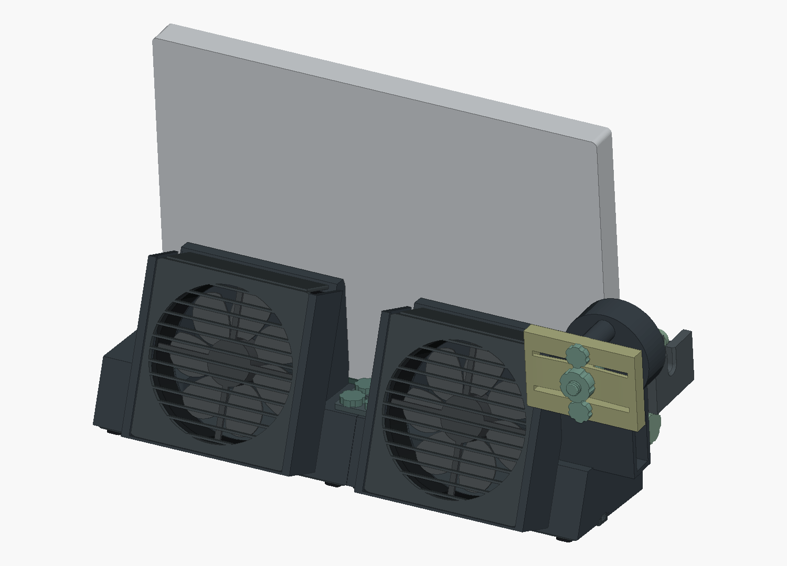
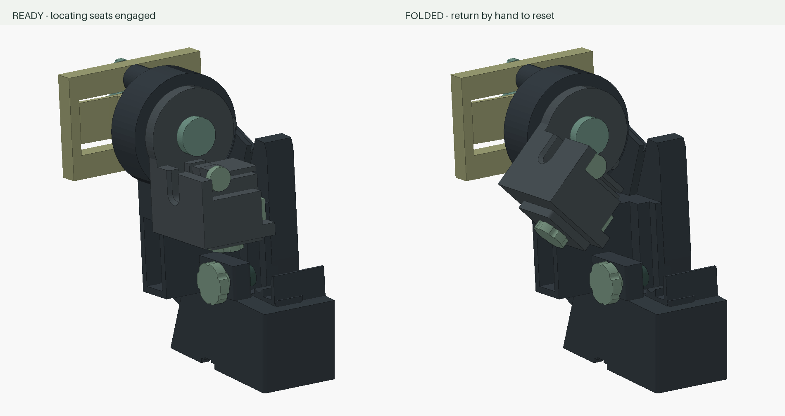

Five degrees. That’s enough.
The laptop leans onto the plenum. A continuous low lip guides its underside; the loading end stays open.
A desk dock for the Precision 5680
Let the air plenum do the work of a stand.
A little lean. Two recessed fans. A considered place for the laptop at the edge of the desk.

The laptop leans onto the plenum. A continuous low lip guides its underside; the loading end stays open.
Two 120 × 120 × 25 mm fans sit in deep pockets. Their 18° plane keeps the intake space behind them.
Slide-in grilles. Openable ducts. Printed hand controls. Each piece has a reason to be here.
02 / THE WORKING MODEL
Orbit the actual geometry. Lift the laptop, slide out the fans, and explore the holder’s resettable motion.
Open the full viewer03 / MADE TO BE MADE
Open CAD, practical service access, and large fasteners you can print. Designed around PETG, a P1S, and a 0.4 mm nozzle.
Remove the laptop, lift the grille, then lift the fan. Friction lands retain the grille; its upper return closes the pocket.
Large custom threads secure the body. A printed push pin releases the plug cap. Keyed shims set the measured connector fit.
Cover-edge passages close around the leads. No connector through a tiny hole. Tie lugs keep fan wiring out of the way.

HOLD THE ALIGNMENT. ALLOW A RETREAT.
A cam and replaceable printed spring are intended to let the holder fold away when an unmated plug is struck during misaligned docking. Return it by hand to reset.
These are prototype targets, not verified performance. Release depends on load direction, fit, friction and preload; a static setting is not an impact-force ceiling.
Read the mechanism studyTHE REASONS, NOT JUST THE RENDERS
The geometry, assumptions, checks and unfinished questions live beside the design. Start with the guides, then follow the evidence.
OPEN DESIGN / D7
CAD, individual print meshes, source, study notes and checks.
Prototype package · Geometric preflight · Unsliced
Saved review package. Two shell exports need regeneration; see the included CURRENT_STATUS.md before printing.
Download the D7 package View the repositoryPrint fit samples first. Physical fit, release force and cooling still need a prototype.